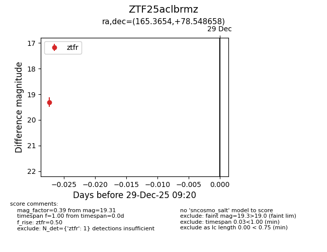
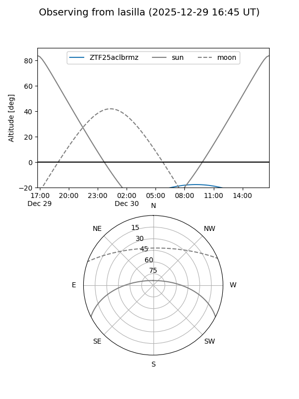
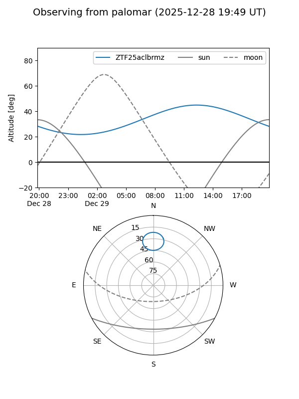

ZTF25aclbrmz
Target ZTF25aclbrmz at 2025-12-29 09:21
Aliases and brokers:
FINK: fink-portal.org/ZTF25aclbrmz
Lasair: lasair-ztf.lsst.ac.uk/objects/ZTF25aclbrmz
ALeRCE: alerce.online/object/ZTF25aclbrmz
alt names
ZTF25aclbrmz (ztf,fink_ztf)
Coordinates:
equatorial (ra, dec) = 165.3654,+78.54866
equatorial (HMS+DMS) = 11:01:27.69,+78:32:55.17
galactic (l, b) = (129.5335,+37.13140)
Flags:
Photometry:
last ztfr=19.31
1 ztfr detections
Lightcurve

Visibility


Additional plots